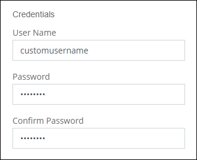
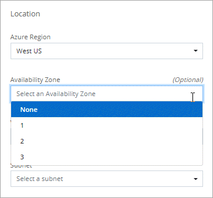

发行说明
发行说明
新增功能
 建议更改
建议更改
了解BlueXP中Cloud Volumes ONTAP 管理的新增功能。
此页面上介绍的增强功能专用于支持Cloud Volumes ONTAP 管理的BlueXP功能。要了解 Cloud Volumes ONTAP 软件本身的新增功能， "转至《 Cloud Volumes ONTAP 发行说明》"
2023年9月10日
在3.1.33版的连接器中引入了以下更改。
支持Azure中的Lsv3系列VM
从9.13.1版本开始、Azure中的Cloud Volumes ONTAP现在支持L48s_v3和L64s_v3实例类型、用于在单个和多个可用性区域中使用共享托管磁盘进行单节点和高可用性对部署。这些实例类型支持Flash Cache。
2023年7月30日
以下更改是在连接器3.9.32版本中推出的。
Google Cloud支持Flash Cache和高写入速度
在适用于Cloud Volumes ONTAP 9.13.1及更高版本的Google Cloud中、可以单独启用Flash Cache和高写入速度。所有受支持的实例类型均支持高写入速度。以下实例类型支持Flash Cache：
-
N2-standard-16
-
N2-standard-32
-
N2-standard-48
-
N2-standard-64
您可以在单节点部署和高可用性对部署中单独使用或同时使用这些功能。
使用情况报告增强功能
现在、对使用情况报告中显示的信息进行了各种改进。以下是使用情况报告的增强功能：
-
此时、TiB单元将包含在列名称中。
-
现在、系统会为序列号添加一个新的"节点"字段。
-
现在、Storage VM使用情况报告下会包含一个新的"Workload Type"列。
-
工作环境名称现在包含在Storage VM和卷使用情况报告中。
-
卷类型"file"现在标记为"Primary (Read/Write)"。
-
卷类型"Secondary (DP)"现在标记为"Secondary (Secondary (DP))"。
有关使用情况报告的详细信息、请参见 "下载使用情况报告"。
2023年7月26日
在3.9.31版本的连接器中引入了以下更改。
Cloud Volumes ONTAP 9.13.1 GA
BlueXP现在可以在AWS、Azure和Google Cloud中部署和管理Cloud Volumes ONTAP 9.13.1正式发布版。
2023年7月2日
在3.9.31版本的连接器中引入了以下更改。
支持在Azure中部署HA多可用性区域
对于Cloud Volumes ONTAP 9.12.1 GA及更高版本、Azure中的日本东部和韩国中部现在支持HA多可用性区域部署。
有关支持多个可用性区域的所有区域的列表、请参见 "Azure下的全局区域映射"。
自主防兰森保护支持
Cloud Volumes ONTAP现在支持自动防兰软件保护(ARP)。Cloud Volumes ONTAP 9.12.1及更高版本支持ARP。
要了解有关ARP与Cloud Volumes ONTAP的更多信息、请参见 "自主勒索软件保护"。
2023年6月26日
以下更改是在3.9.30版的连接器中推出的。
Cloud Volumes ONTAP 9.13.1 RC1
BlueXP现在可以在AWS、Azure和Google Cloud中部署和管理Cloud Volumes ONTAP 9.13.1。
2023年6月4日
以下更改是在3.9.30版的连接器中推出的。
Cloud Volumes ONTAP升级版本选择器更新
现在、您可以通过Upgrade Cloud Volumes ONTAP页面选择升级到最新可用的Cloud Volumes ONTAP版本或更早版本。
要了解有关通过BlueXP升级Cloud Volumes ONTAP的更多信息、请参见 "升级 Cloud Volumes ONTAP"。
2023年5月7日
以下更改是在连接器3.9.29版中推出的。
现在、Google Cloud支持卡塔尔地区
现在、适用于Cloud Volumes ONTAP 的Google Cloud和适用于Cloud Volumes ONTAP 9.12.1 GA及更高版本的Connector支持卡塔尔地区。
现在、Azure支持瑞典中部地区
现在、适用于Cloud Volumes ONTAP 的Azure和适用于Cloud Volumes ONTAP 9.12.1 GA及更高版本的Connector支持瑞典中部地区。
支持在Azure澳大利亚东部部署HA多可用性区域
Azure中的澳大利亚东部地区现在支持在Cloud Volumes ONTAP 9.12.1 GA及更高版本中部署HA多可用性区域。
充电使用情况细分
现在、您可以了解订阅基于容量的许可证时要支付的费用。以下类型的使用情况报告可从BlueXP中的电子钱包下载。使用情况报告提供了您的订阅的容量详细信息、并告诉您Cloud Volumes ONTAP 订阅中的资源收费情况。可下载的报告可以轻松地与他人共享。
-
Cloud Volumes ONTAP 软件包使用情况
-
使用情况概要
-
Storage VM使用情况
-
卷使用量
有关详细信息，请参见 "管理基于容量的许可证"。
现在、在访问BlueXP而未订阅商城时会显示通知
现在、只要您在BlueXP中访问Cloud Volumes ONTAP 而没有市场订阅、就会显示一条通知。通知中指出："需要在此工作环境下进行商城订阅、以符合Cloud Volumes ONTAP 条款和条件。"
2023年4月4日
从Cloud Volumes ONTAP 9.12.1 GA开始、AWS现在支持中国地区、如下所示。
-
支持单节点系统。
-
支持直接从 NetApp 购买的许可证。
有关区域可用性、请参见 "适用于Cloud Volumes ONTAP 的全局区域映射"。
2023年4月3日
以下更改是在连接器3.9.28版本中推出的。
现在、在Google Cloud中支持都灵地区
现在、适用于Cloud Volumes ONTAP 的Google Cloud和适用于Cloud Volumes ONTAP 9.12.1 GA及更高版本的Connector均支持都灵地区。
支持在创建卷期间添加注释
在此版本中、您可以在使用API创建Cloud Volumes ONTAP FlexGroup 卷或FlexVol 卷时进行注释。
为Cloud Volumes ONTAP 概述、卷和聚合页面重新设计了BlueXP用户界面
现在、BlueXP对Cloud Volumes ONTAP 概述、卷和聚合页面的用户界面进行了重新设计。基于区块的设计可在每个区块中提供更全面的信息、从而提供更好的用户体验。

可通过Cloud Volumes ONTAP 查看FlexGroup 卷
现在、可以通过BlueXP中重新设计的卷磁贴查看直接通过CLI或System Manager创建的FlexGroup 卷。与为FlexVol 卷提供的信息相同、BlueXP可通过专用的"卷"图块提供有关已创建FlexGroup 卷的详细信息。

|
目前、您只能在BlueXP下查看现有FlexGroup 卷。在BlueXP中创建FlexGroup 卷的功能不可用、但计划在未来版本中使用。 |

2023年3月13日
中国地区支持
从Cloud Volumes ONTAP 9.12.1 GA开始、Azure现在支持中国地区支持、如下所示。
-
中国北部3支持Cloud Volumes ONTAP。
-
支持单节点系统。
-
支持直接从 NetApp 购买的许可证。
有关区域可用性、请参见 "适用于Cloud Volumes ONTAP 的全局区域映射"。
2023年3月5日
以下更改是在3.9.27版本的Connector中推出的。
Cloud Volumes ONTAP 9.13.0
现在、BlueXP可以在AWS、Azure和Google Cloud中部署和管理Cloud Volumes ONTAP 9.13.0。
Azure支持16 TiB和32 Tib
Cloud Volumes ONTAP 现在支持16 TiB和32 TiB磁盘大小、用于在Azure中的受管磁盘上运行的高可用性部署。
了解更多信息 "Azure中支持的磁盘大小"。
MTEKM许可证
现在、运行9.12.1 GA或更高版本的新Cloud Volumes ONTAP 系统和现有系统都附带了多租户加密密钥管理(MTEKM)许可证。
使用NetApp卷加密时、多租户外部密钥管理可使单个Storage VM (SVM)通过KMIP服务器维护自己的密钥。
支持无Internet环境
现在、与Internet完全隔离的任何云环境均支持Cloud Volumes ONTAP。这些环境仅支持基于节点的许可(BYOL)。不支持基于容量的许可。要开始使用、请手动安装Connector软件、登录到在Connector上运行的BlueXP控制台、将BYOL许可证添加到BlueXP数字钱包中、然后部署Cloud Volumes ONTAP。
Google Cloud中的Flash Cache和高写入速度
现在、对于Cloud Volumes ONTAP 9.13.0版本的特定实例、可支持闪存、高写入速度和8、896字节的高最大传输单元(MTU)。
了解更多信息 "支持Google Cloud按许可证配置"。
2023年2月5日
以下更改是在连接器3.9.26版中推出的。
在AWS中创建放置组
现在、可以通过AWS HA单可用性区域(AZ)部署创建放置组、并使用新的配置设置。现在、您可以选择绕过失败的放置组创建、并允许AWS HA单AZ部署成功完成。
有关如何配置放置组创建设置的详细信息、请参见 "为AWS HA Single AZ配置放置组创建"。
专用DNS区域配置更新
现在、您可以使用新的配置设置、以便在使用Azure专用链路时避免在专用DNS区域和虚拟网络之间创建链路。默认情况下、创建处于启用状态。
WORM存储和数据分层
现在、在创建Cloud Volumes ONTAP 9.8或更高版本系统时、您可以同时启用数据分层和WORM存储。通过使用WORM存储启用数据分层、您可以将数据分层到云中的对象存储。
2023年1月1日
以下更改是在连接器3.9.25版中推出的。
Google Cloud提供许可包
在Google云市场中、Cloud Volumes ONTAP 可以通过按需购买或按年订立的合同获得经过优化且基于边缘缓存容量的许可包。
Cloud Volumes ONTAP 的默认配置
新的Cloud Volumes ONTAP 部署不再包括多租户加密密钥管理(MTEKM)许可证。
有关随Cloud Volumes ONTAP 自动安装的ONTAP 功能许可证的详细信息、请参见 "Cloud Volumes ONTAP 的默认配置"。
2022年12月15日
Cloud Volumes ONTAP 9.12.0
现在、BlueXP可以在AWS和Google Cloud中部署和管理Cloud Volumes ONTAP 9.12.0。
2022年12月8日
Cloud Volumes ONTAP 9.12.1
BlueXP现在可以部署和管理Cloud Volumes ONTAP 9.12.1、其中包括对新功能和其他云提供商区域的支持。
2022年12月4日
以下更改是在连接器3.9.24版本中推出的。
现在、在创建Cloud Volumes ONTAP 期间、可以使用WORM +云备份
现在、在Cloud Volumes ONTAP 创建过程中、可以同时激活一次写入、多次读取(WORM)和云备份功能。
现在、Google Cloud支持以色列地区
现在、适用于Cloud Volumes ONTAP 的Google Cloud以及适用于Cloud Volumes ONTAP 9.11.1 P3及更高版本的Connector均支持以色列地区。
2022年11月15日
以下更改是在3.0.23版本的连接器中引入的。
Google Cloud中的ONTAP S3许可证
现在、在Google云平台中运行9.12.1或更高版本的新Cloud Volumes ONTAP 系统和现有系统上均包含ONTAP S3许可证。
2022年11月6日
以下更改是在3.0.23版本的连接器中引入的。
支持Azure的受管磁盘加密
添加了一个新的Azure权限、现在允许您在创建时对所有受管磁盘进行加密。
有关此新功能的详细信息、请参见 "设置 Cloud Volumes ONTAP 以在 Azure 中使用客户管理的密钥"。
2022年9月18日
以下更改是在连接器3.9.22版本中推出的。
数字电子钱包增强功能
-
现在、"数字电子钱包"将显示您的帐户中Cloud Volumes ONTAP 系统的优化I/O许可包和已配置WORM容量的摘要。
这些详细信息可以帮助您更好地了解如何为您付费以及是否需要购买额外容量。
-
现在、您可以从一种充电方法更改为优化充电方法。
优化成本和性能
现在、您可以直接从Canvas优化Cloud Volumes ONTAP 系统的成本和性能。
选择工作环境后、您可以选择*优化成本和性能*选项来更改Cloud Volumes ONTAP 的实例类型。选择规模较小的实例有助于降低成本、而更改到规模较大的实例则有助于优化性能。

AutoSupport 通知
现在、如果Cloud Volumes ONTAP 系统无法发送AutoSupport 消息、BlueXP将生成通知。此通知包含一个指向说明的链接、可用于对网络问题进行故障排除。
2022年7月31日
以下更改是在连接器3.9.21版本中推出的。
MTEKM许可证
现在、运行9.11.1或更高版本的新Cloud Volumes ONTAP 系统和现有系统都附带了多租户加密密钥管理(MTEKM)许可证。
使用NetApp卷加密时、多租户外部密钥管理可使单个Storage VM (SVM)通过KMIP服务器维护自己的密钥。
代理服务器
现在、如果无法通过出站Internet连接发送AutoSupport 消息、则BlueXP会自动将Cloud Volumes ONTAP 系统配置为使用Connector作为代理服务器。
AutoSupport 会主动监控系统的运行状况，并向 NetApp 技术支持发送消息。
唯一的要求是确保Connector的安全组允许通过端口3128进行_inbound_连接。部署Connector后、您需要打开此端口。
更改充电方法
现在、您可以更改使用基于容量的许可的Cloud Volumes ONTAP 系统的收费方法。例如、如果您使用Essentials软件包部署了Cloud Volumes ONTAP 系统、则可以在业务需求发生变化时将其更改为"Professional软件包"。此功能可从Digital Wallet获得。
安全组增强功能
现在、在创建Cloud Volumes ONTAP 工作环境时、您可以通过用户界面选择是希望预定义的安全组仅允许选定网络(建议)内的流量、还是允许所有网络内的流量。

2022年7月18日
Azure中的新许可包
通过Azure Marketplace订阅付费时、Azure中的Cloud Volumes ONTAP 可使用两个基于容量的新许可包：
-
优化：单独为已配置的容量和I/O操作付费
-
边缘缓存：许可 "Cloud Volumes Edge Cache"
2022年7月3日
在3.9.20版本的连接器中引入了以下更改。
数字电子钱包
现在、Digital Wallet将按许可包显示您帐户中的总已用容量和已用容量。这有助于您了解如何为您付费以及是否需要购买额外容量。

弹性卷增强功能
现在、在通过用户界面创建Cloud Volumes ONTAP 工作环境时、BlueXP支持Amazon EBS弹性卷功能。使用GP3或IO1磁盘时、弹性卷功能默认处于启用状态。您可以根据存储需求选择初始容量、并在部署Cloud Volumes ONTAP 后进行修改。
AWS中的ONTAP S3许可证
现在、在AWS中运行版本9.11.0或更高版本的新Cloud Volumes ONTAP 系统和现有系统中提供了ONTAP S3许可证。
新增Azure Cloud区域支持
从9.10.1版开始、Azure West US 3区域现在支持Cloud Volumes ONTAP。
Azure中的ONTAP S3许可证
现在、在Azure中运行版本9.9.1或更高版本的新Cloud Volumes ONTAP 系统和现有系统中提供了ONTAP S3许可证。
2022年6月7日
在3.9.19版本的连接器中引入了以下更改。
Cloud Volumes ONTAP 9.11.1
现在、BlueXP可以部署和管理Cloud Volumes ONTAP 9.11.1、其中包括对新功能的支持以及其他云提供商区域的支持。
新建高级视图
如果您需要对Cloud Volumes ONTAP 执行高级管理、可以使用ONTAP 系统管理器来执行此操作、该管理器是随ONTAP 系统提供的一个管理界面。我们直接在BlueXP中提供了System Manager界面、因此您无需离开BlueXP进行高级管理。
此高级视图可作为Cloud Volumes ONTAP 9.10.0及更高版本的预览版提供。我们计划改进此体验、并在即将发布的版本中添加增强功能。请通过产品内聊天向我们发送反馈。
支持Amazon EBS弹性卷
通过Cloud Volumes ONTAP 聚合支持Amazon EBS弹性卷功能、可提高性能并增加容量、同时支持BlueXP根据需要自动增加底层磁盘容量。
从_new_ Cloud Volumes ONTAP 9.11.0系统以及GP3和IO1 EBS磁盘类型开始、可支持弹性卷。
请注意、要支持弹性卷、需要为Connector提供新的AWS权限：
"ec2:DescribeVolumesModifications",
"ec2:ModifyVolume",请务必为您添加到BlueXP中的每组AWS凭据提供这些权限。 "查看AWS的最新Connector策略"。
支持在共享AWS子网中部署HA对
Cloud Volumes ONTAP 9.11.1支持AWS VPC共享。通过此版本的Connector、您可以在使用API时在AWS共享子网中部署HA对。
使用服务端点时网络访问受限
现在、当使用vNet服务端点在Cloud Volumes ONTAP 和存储帐户之间建立连接时、BlueXP会限制网络访问。如果禁用Azure专用链路连接、则BlueXP将使用服务端点。
支持在Google Cloud中创建Storage VM
从9.11.1版开始、Google Cloud中的Cloud Volumes ONTAP 现在支持多个Storage VM。从此版本的Connector开始、您可以使用BlueXP在Google Cloud中的Cloud Volumes ONTAP HA对上创建Storage VM。
要支持创建Storage VM、需要为Connector提供新的Google Cloud权限：
- compute.instanceGroups.get
- compute.addresses.get请注意、您必须使用ONTAP 命令行界面或系统管理器在单节点系统上创建Storage VM。
2022年5月2日
连接器3.9.18版引入了以下变更。
Cloud Volumes ONTAP 9.11.0
BlueXP现在可以部署和管理Cloud Volumes ONTAP 9.11.0。
调解器升级增强功能
当BlueXP升级HA对的调解器时、它现在会先验证新的调解器映像是否可用、然后再删除启动磁盘。此更改可确保调解器在升级过程失败时能够继续成功运行。
已删除K8s选项卡
先前已弃用K8s选项卡、现已将其删除。如果要将Kubernetes与Cloud Volumes ONTAP 结合使用、可以将受管Kubernetes集群添加到Canvas中、作为一个用于高级数据管理的工作环境。
Azure中的年度合同
Essentials和Professional软件包现在可通过一份年度合同在Azure中提供。您可以联系NetApp销售代表购买年度合同。此合同在Azure Marketplace中以私人优惠形式提供。
在NetApp与您共享私人优惠后、您可以在创建工作环境期间从Azure Marketplace订阅年度计划。
Connector需要新的AWS权限
现在、在单个可用性区域(AZ)中部署HA对时、创建AWS分布放置组需要以下权限：
"ec2:DescribePlacementGroups",
"iam:GetRolePolicy",现在、要优化BlueXP创建布局组的方式、需要这些权限。
请务必为您添加到BlueXP中的每组AWS凭据提供这些权限。 "查看AWS的最新Connector策略"。
全新Google Cloud区域支持
从9.10.1版开始、以下Google Cloud地区现在支持Cloud Volumes ONTAP ：
-
新德里(亚洲-南2)
-
墨尔本(澳大利亚南部2)
-
米兰(欧洲-西部8)—仅限单节点
-
圣地亚哥(南美洲-西1)—仅限单节点
在Google Cloud中支持n2-standard-16
从9.10.1版开始、Google Cloud中的Cloud Volumes ONTAP 现在支持n2-standard-16计算机类型。
Google Cloud防火墙策略增强功能
-
在Google Cloud中创建Cloud Volumes ONTAP HA对时、BlueXP现在将在VPC中显示所有现有防火墙策略。
以前、BlueXP不会在VPC-1、VPC-2或VPC-3中显示任何没有目标标记的策略。
-
在Google Cloud中创建Cloud Volumes ONTAP 单节点系统时、您现在可以选择是希望预定义的防火墙策略仅允许选定VPC (建议)内的流量、还是允许所有VPC内的流量。
Google Cloud服务帐户增强功能
当您选择要在Cloud Volumes ONTAP 中使用的Google云服务帐户时、BlueXP现在会显示与每个服务帐户关联的电子邮件地址。通过查看电子邮件地址、可以更轻松地区分同名服务帐户。

2022年4月3日
已删除 System Manager 链接
我们已删除先前在 Cloud Volumes ONTAP 工作环境中提供的 System Manager 链接。
您仍然可以通过在连接到 Cloud Volumes ONTAP 系统的 Web 浏览器中输入集群管理 IP 地址来连接到 System Manager 。 "了解有关连接到 System Manager 的更多信息"。
为 WORM 存储充电
现在，首发特惠价已过期，您将需要为使用 WORM 存储付费。根据 WORM 卷的总配置容量，每小时进行一次充电。此适用场景 新的和现有的 Cloud Volumes ONTAP 系统。
2022年2月27日
连接器3.9.16版引入了以下更改。
2022年2月9日
市场更新
-
现在、所有云提供商市场均可提供Essentials软件包和专业软件包。
通过这些按容量付费方法，您可以按小时付费，也可以直接从云提供商购买年度合同。您仍然可以选择直接从 NetApp 购买按容量许可证。
如果您已在云市场订阅，则也会自动订阅这些新产品。在部署新的 Cloud Volumes ONTAP 工作环境时，您可以选择按容量收费。
如果您是新客户、在创建新的工作环境时、BlueXP将提示您订阅。
-
所有云提供商市场的逐节点许可均已弃用、不再适用于新订阅者。其中包括年度合同和每小时订阅（ Explore ， Standard 和 Premium ）。
现有订阅有效的客户仍可使用此收费方法。
2022年2月6日
Exchange 未分配的许可证
如果您尚未使用未分配的基于节点的 Cloud Volumes ONTAP 许可证，则现在可以通过将其转换为 Cloud Backup 许可证， Cloud Data sense 许可证或 Cloud Tiering 许可证来交换此许可证。
此操作将撤消 Cloud Volumes ONTAP 许可证，并为此服务创建一个具有相同到期日期的等效美元的许可证。
2022年1月30日
以下更改是在连接器3.9.15版本中推出的。
重新设计的许可选择
我们在创建新的 Cloud Volumes ONTAP 工作环境时重新设计了许可选择屏幕。这些变更重点介绍了 2021 年 7 月推出的按容量收费方法，并通过云提供商市场为即将推出的产品提供支持。
数字电子钱包更新
我们通过将 Cloud Volumes ONTAP 许可证整合到一个选项卡中来更新了 * 数字电子钱包 * 。
2022年1月2日
以下更改是在连接器3.9.14版本中推出的。
支持其他Azure VM类型
从 9.10.1 版开始， Microsoft Azure 中的以下 VM 类型现在支持 Cloud Volumes ONTAP ：
-
E4ds_v4
-
E8ds_v4
-
E32ds_v4
-
E48ds_v4
转至 "《 Cloud Volumes ONTAP 发行说明》" 有关支持的配置的更多详细信息。
FlexClone 费用更新
如果使用 "基于容量的许可证" 对于 Cloud Volumes ONTAP ，您不再需要为 FlexClone 卷所使用的容量付费。
此时将显示充电方法
现在、BlueXP会在画布的右侧面板中显示每个Cloud Volumes ONTAP 工作环境的充电方法。

选择您的用户名
创建 Cloud Volumes ONTAP 工作环境时，您现在可以选择输入首选用户名，而不是默认管理员用户名。

卷创建增强功能
我们对卷创建进行了一些改进：
-
我们重新设计了创建卷向导，以便于使用。
-
现在，添加到卷的标记将与应用程序模板服务相关联，此服务有助于您组织和简化资源管理。
-
现在，您可以为 NFS 选择自定义导出策略。

2021年11月28日
以下更改是在3.9.13版本的Connector中引入的。
Cloud Volumes ONTAP 9.10.1
BlueXP现在可以部署和管理Cloud Volumes ONTAP 9.10.1。
NetApp Keystone 订阅
现在、您可以使用Keystone订阅为Cloud Volumes ONTAP HA对付费。
Keystone订阅是一种基于订阅的按需购买服务、可为那些更喜欢运营支出消费模式而不是前期资本支出或租赁的客户提供无缝的混合云体验。
您可以从BlueXP部署的所有新版本的Cloud Volumes ONTAP 均支持Keystone订阅。
新增 AWS 区域支持
现在， AWS 亚太地区（日本）（亚太地区（日本）（亚太地区，日本）（亚太地区）（亚太地区）（亚太地区） 3 支持 Cloud Volumes ONTAP 。
端口减少
对于单节点系统和 HA 对， Azure 中的 Cloud Volumes ONTAP 系统不再打开端口 8023 和 49000 。
此操作会从连接器 3.9.13 版开始更改适用场景 new Cloud Volumes ONTAP 系统。
2021年10月4日
以下更改是在3.9.11版本的连接器中推出的。
Cloud Volumes ONTAP 9.10.0
BlueXP现在可以部署和管理Cloud Volumes ONTAP 9.10.0。
缩短部署时间
启用正常写入速度后，我们缩短了在 Microsoft Azure 或 Google Cloud 中部署 Cloud Volumes ONTAP 工作环境所需的时间。现在，部署时间平均缩短 3-4 分钟。
2021年9月2日
以下更改是在连接器3.9.10版中推出的。
Azure 中由客户管理的加密密钥
数据会使用在 Azure 中的 Cloud Volumes ONTAP 上自动加密 "Azure 存储服务加密" 使用 Microsoft 管理的密钥。但是，您现在可以通过完成以下步骤来使用自己的客户管理的加密密钥：
-
从 Azure 创建密钥存储，然后在该存储中生成密钥。
-
在BlueXP中、使用API创建使用密钥的Cloud Volumes ONTAP 工作环境。
2021 年 7 月 7 日
以下更改是在连接器3.9.8版中推出的。
新的充电方法
Cloud Volumes ONTAP 提供了新的充电方法。
-
* 基于容量的 BYOL* ：通过基于容量的许可证，您可以按每 TiB 容量为 Cloud Volumes ONTAP 付费。此许可证与您的 NetApp 帐户关联，只要您的许可证具有足够的容量，您就可以创建多个 Cloud Volumes ONTAP 系统。基于容量的许可以软件包的形式提供，可以是 _Essentials 或 _Professional 。
-
* 免费提供 * ：免费使用 NetApp 提供的所有 Cloud Volumes ONTAP 功能（云提供商仍需付费）。每个系统的已配置容量限制为 500 GiB ，并且没有支持合同。您最多可以有 10 个免费系统。
下面是一个可以选择的充电方法示例：

可供一般使用的 WORM 存储
一次写入，多次读取（ Write Once ， Read Many ， WORM ）存储不再处于预览状态，现在可用于 Cloud Volumes ONTAP 。 "了解有关 WORM 存储的更多信息。"。
在 AWS 中支持 m5dn.24xlarge
从 9.9.1 版开始， Cloud Volumes ONTAP 现在支持采用以下充电方法的 m5dn.24xlarge 实例类型： PAYGO Premium ，自带许可证（ BYOL ）和 Freemium 。
选择现有 Azure 资源组
在 Azure 中创建 Cloud Volumes ONTAP 系统时，您现在可以选择为虚拟机及其关联资源选择现有资源组。

在部署失败或删除时、通过以下权限、BlueXP可以从资源组中删除Cloud Volumes ONTAP 资源：
"Microsoft.Network/privateEndpoints/delete",
"Microsoft.Compute/availabilitySets/delete",请务必为您添加到BlueXP中的每组Azure凭据提供这些权限。 "查看Azure的最新Connector策略"。
Blob 公有 访问现在在 Azure 中已禁用
作为一项安全增强功能、在为Cloud Volumes ONTAP 创建存储帐户时、BlueXP现在会禁用* Blob公有 访问*。
Azure Private Link 增强功能
默认情况下、BlueXP现在可在新Cloud Volumes ONTAP 系统的启动诊断存储帐户上启用Azure专用链路连接。
这意味着 Cloud Volumes ONTAP 的 all 存储帐户现在将使用专用链接。
Google Cloud 中的平衡持久性磁盘
从 9.9.1 版开始， Cloud Volumes ONTAP 现在支持平衡持久性磁盘（ PD 平衡）。
这些 SSD 通过提供更低的每 GiB IOPS 来平衡性能和成本。
Google Cloud 不再支持 custom-4-16384
新的 Cloud Volumes ONTAP 系统不再支持 custom-4-16384 计算机类型。
如果您的现有系统在此计算机类型上运行，则可以继续使用它，但我们建议切换到 n2-standard-4 计算机类型。
2021年5月30日
以下更改是在连接器3.9.7版中推出的。
AWS 中的新专业软件包
通过新的专业包，您可以使用 AWS Marketplace 提供的年度合同捆绑 Cloud Volumes ONTAP 和 Cloud Backup Service 。按 TiB 支付。此订阅不允许您备份内部数据。
如果选择此付款选项，则可以通过 EBS 磁盘并分层到 S3 对象存储（单节点或 HA ）为每个 Cloud Volumes ONTAP 系统配置最多 2 PiB 的容量。
转至 "AWS Marketplace 页面" 要查看定价详细信息，请转到 "《 Cloud Volumes ONTAP 发行说明》" 了解有关此许可选项的更多信息。
AWS 中 EBS 卷上的标记
现在、当BlueXP创建新的Cloud Volumes ONTAP 工作环境时、它会向EBS卷添加标记。这些标记先前是在部署 Cloud Volumes ONTAP 后创建的。
如果您的组织使用服务控制策略（ Service Control Policies ， SCP ）来管理权限，此更改将很有帮助。
自定义导出策略的增强功能
在创建新NFS卷时、BlueXP现在会按升序显示自定义导出策略、从而使您可以更轻松地找到所需的导出策略。
删除旧的云快照
现在、BlueXP将删除在部署Cloud Volumes ONTAP 系统以及每次关闭系统时创建的根磁盘和启动磁盘的旧云快照。对于根卷和启动卷，只会保留两个最新的快照。
此增强功能可通过删除不再需要的快照来帮助降低云提供商成本。
请注意， Connector 需要新的权限才能删除 Azure 快照。 "查看Azure的最新Connector策略"。
"Microsoft.Compute/snapshots/delete"2021年5月24日
Cloud Volumes ONTAP 9.9.1
BlueXP现在可以部署和管理Cloud Volumes ONTAP 9.1.1。
2021年4月11日
以下更改是在连接器3.9.5版中推出的。
逻辑空间报告
现在、BlueXP可以对其为Cloud Volumes ONTAP 创建的初始Storage VM进行逻辑空间报告。
如果以逻辑方式报告空间，则 ONTAP 会报告卷空间，以便存储效率功能节省的所有物理空间也会报告为已用空间。
支持 AWS 中的 GP3 磁盘
从 9.7 版开始， Cloud Volumes ONTAP 现在支持 _General Purpose SSD （ GP3 ） _ 磁盘。GP3 磁盘是成本最低的 SSD ，可在各种工作负载的成本和性能之间实现平衡。
AWS 不再支持冷 HDD 磁盘
Cloud Volumes ONTAP 不再支持冷 HDD （ SC1 ）磁盘。
适用于 Azure 存储帐户的 TLS 1.2
当BlueXP在Azure for Cloud Volumes ONTAP 中创建存储帐户时、存储帐户的TLS版本现在为1.2版。
2021年3月8日
以下更改是在连接器3.9.4版中推出的。
Cloud Volumes ONTAP 9.9.0
BlueXP现在可以部署和管理Cloud Volumes ONTAP 9.0.0。
使用客户管理的 CMK 进行 AWS 加密
BlueXP始终支持您使用AWS密钥管理服务(KMS)对Cloud Volumes ONTAP 数据进行加密。从 Cloud Volumes ONTAP 9.0.0 开始，如果选择客户管理的 CMK ， EBS 磁盘上的数据以及分层到 S3 的数据将被加密。以前，只会对 EBS 数据进行加密。
请注意，您需要为 Cloud Volumes ONTAP IAM 角色提供访问权限才能使用 CMK 。
支持 Azure DoD
现在，您可以在 Azure 国防部（ DoD ）影响级别 6 （ IL6 ）中部署 Cloud Volumes ONTAP 9.8 。
Google Cloud 中的 IP 地址减少
我们减少了 Google Cloud 中 Cloud Volumes ONTAP 9.8 及更高版本所需的 IP 地址数量。默认情况下，不需要一个 IP 地址（我们将集群间 LIF 与节点管理 LIF 统一在一起）。您还可以在使用 API 时跳过创建 SVM 管理 LIF ，这样就可以减少对额外 IP 地址的需求。
Google Cloud 中的共享 VPC 支持
现在，在 Google Cloud 中部署 Cloud Volumes ONTAP HA 对时，您可以为 VPC-1 ， VPC-2 和 VPC-3 选择共享 VPC 。以前，只有 VPC-0 可以是共享 VPC 。Cloud Volumes ONTAP 9.8 及更高版本支持此更改。
2021年1月4日
以下更改是在连接器3.9.2版中推出的。
AWS 前哨
几个月前，我们宣布 Cloud Volumes ONTAP 已获得 Amazon Web Services （ AWS ）前台就绪称号。今天、我们很高兴地宣布、我们已通过AWS前台验证了BlueXP和Cloud Volumes ONTAP。
如果您有 AWS 前台，则可以通过在 " 工作环境 " 向导中选择前台 VPC 来在该前台部署 Cloud Volumes ONTAP 。体验与 AWS 中的任何其他 VPC 相同。请注意，您需要先在 AWS 前台部署 Connector 。
需要指出的限制如下：
-
目前仅支持单节点 Cloud Volumes ONTAP 系统
-
您可以与 Cloud Volumes ONTAP 结合使用的 EC2 实例仅限于前台可用的实例
-
目前仅支持通用 SSD （ GP2 ）
支持的 Azure 区域中的超高 SSD VNVRAM
现在，如果您在单节点系统中使用 E32S_v3 VM 类型，则 Cloud Volumes ONTAP 可以使用超 SSD 作为 VNVRAM "在任何受支持的 Azure 区域"。
VNVRAM 可提高写入性能。
选择 Azure 中的可用性区域
现在，您可以选择要在其中部署单节点 Cloud Volumes ONTAP 系统的可用性区域。如果不选择AZ、BlueXP将为您选择一个。

Google Cloud 中的大磁盘
现在， Cloud Volumes ONTAP 在 GCP 中支持 64 TB 磁盘。
|
|
由于 GCP 限制，单独使用磁盘的最大系统容量仍为 256 TB 。 |
Google Cloud 中的新计算机类型
Cloud Volumes ONTAP 现在支持以下计算机类型：
-
n2-standard-4 ，具有 Explore 许可证和 BYOL
-
n2-standard-8 ，具有标准许可证和 BYOL
-
n2-standard-32 ，具有高级许可证和 BYOL
2020年11月3日
以下更改是在连接器3.9.0版中推出的。
适用于 Cloud Volumes ONTAP 的 Azure 专用链路
默认情况下、BlueXP现在可在Cloud Volumes ONTAP 及其关联存储帐户之间启用Azure专用链路连接。专用链路可确保 Azure 中端点之间的连接安全。